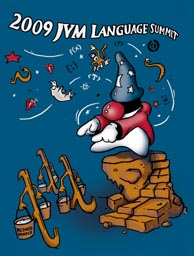

CALL FOR PARTICIPATION: JVM LANGUAGE SUMMIT, September 2009
[cross-posted from the JVM summit mailing list] This is a reminder for the 2009 JVM Language Summit to be held at Sun's Santa Clara campus on September 16-18, 2009. Registration is now open for speaker submissions (presentations and workshops) and general attendance. More information is available at http://jvmlangsummit.com.The JVM Language Summit is an open technical collaboration among language designers, compiler writers, tool builders, runtime engineers, and VM architects. We will share our experiences as creators of programming languages for the JVM and of the JVM itself. We also welcome non-JVM developers on similar technologies to attend or speak on their runtime, VM, or language of choice.
The format this year will be slightly different from last year. Attendees told us that the most successful interactions came from small discussion groups rather than prepared lectures, so we've divided the schedule equally between traditional presentations (we're limiting most presentations to 30 minutes this year) and "Workshops". Workshops are informal, facilitated discussion groups among smaller, self-selected participants, and should enable "deeper dives" into the subject matter. There will also be impromptu "lightning talks".
We encourage speakers to submit both a presentation and a workshop; we will arrange to schedule the presentation before the workshop, so that the presentation can spark people's interest and the workshop will allow those who are really interested to go deeper into the subject area. Workshop facilitators may, but are not expected to, prepare presentation materials, but they should come prepared to guide a deep technical discussion. We will be finalizing the program by August 19.
The Summit is being organized by the JVM Engineering team; no managers or marketers involved! So bring your slide rules and be prepared for some seriously geeky discussions.
The registration page is now open at: http://registration.jvmlangsummit.com/
If you have any questions, send inquiries to inquire AT jvmlangsummit.com.
We hope to see you in September!
| August 6, 2009 |